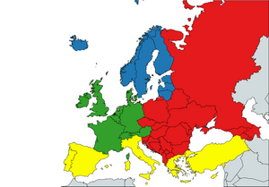

Na początek opowiem o różnych krajach Europy i ich położeniu na mapie
zacznijmy od regionów
W sumie jest 5 regionów w Europie
| p | Północna Europa | Europa Wschodnia | południowa Europa | Europa Zachodnia | Centralna Europa |
| ilość krajow | 8 | 10 | 10 | 8 | 8 |
| liczba ludności | 94 mln | 233 mln | 100 mln | 185 mln | 156 mln |
| Glowne miasto | Londyn | Moskwa | Madryt | Paris | Berlin |
| liczba ludności w miastach | 8 964 523 | 12 655 495 | 3 226 777 | 8 719 411 | 5 814 982 |